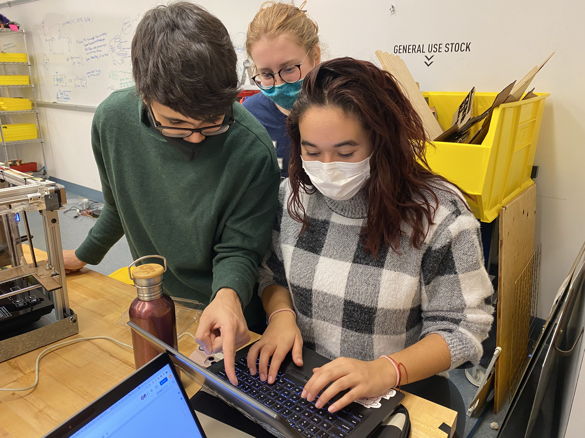

Software Breakdown
Our goal was to make the firmware for this project simplistic and efficient. The majority of the firmware can be divided into 3 different sections: The hotplate, Dispensers, and the User Interface.
GitHub Link
 The hotplate portion of the firmware includes the on and off switch for the hotplate
and the temperature sensor. These two have been mechanically integrated to use servos
- so the firmware for this sector is the control of 3 servos. Because we popped the
top of the hotplate and pulled out the internal switch PCB of the hotplate to the
electrical box, we needed a method to turn on the hotplate on command. The original
switches of the hotplate was a capacitive touch sensor, so we approached the issue
using a servo to touch the sensor when it was time to turn it on. There were 2 buttons
to manage, which led us to program two servos to turn on and touch the sensor
separately - there was an issue of the touch sensor not responding, so the servo
for the boil sensor was programmed to move twice. (The on servo also acts as an off
servo, so this was not pressed twice.) The final function for switching on the servo
was outlined as shown below:
The hotplate portion of the firmware includes the on and off switch for the hotplate
and the temperature sensor. These two have been mechanically integrated to use servos
- so the firmware for this sector is the control of 3 servos. Because we popped the
top of the hotplate and pulled out the internal switch PCB of the hotplate to the
electrical box, we needed a method to turn on the hotplate on command. The original
switches of the hotplate was a capacitive touch sensor, so we approached the issue
using a servo to touch the sensor when it was time to turn it on. There were 2 buttons
to manage, which led us to program two servos to turn on and touch the sensor
separately - there was an issue of the touch sensor not responding, so the servo
for the boil sensor was programmed to move twice. (The on servo also acts as an off
servo, so this was not pressed twice.) The final function for switching on the servo
was outlined as shown below:
The temperature sensor was a little easier than the hotplate servos. The temperature
sensing is consisted of two parts - the sensing and the actuator for putting the sensor
into the water. Reading the temperature of the sensor was very straightforward.
Initialization of the sensor, and reading the values that come thought the allocated
digital pin. The servo’s actuation was also very simple. The only setting that we
needed to do was to get the starting and ending angles that would let the temperature
ensors rest at a reasonable angle when resting, and land in the water when working.
The dispenser code was also very servo focused because of the mechanical design. The water dispenser relies on gravity to release water through a simple valve, which was turned by a servo. As with the temperature servo, the program only had to specify which angle was the closing angle and which was the opening angle. The powder dispenser was identical to the water dispenser in terms of setting the starting and ending position, but because of the output of the powder dispenser being smaller than the amount of powder actually needed in a. Bowl of ramen, we implemented a for loop for the servo to turn n times, where n could be edited by the user. Finally, the ramen dispenser was a mix of a stepper motor and servo motor. Because the algorithm for this module was to first push the ramens forward until the limit switch on the front of the module is pressed by the pressure of the noodles, then retreat back a small amount for the relief of pressure, then the actuation of the servo motor to push a single block of ramen out of the module. To do this, We had to figure out that direction spun the stepper motor in what direction, and how much it spun with a given speed. With much experimentation, we found the perfect balance. The code was configured so that while the limit switch is not pushed, the stepper moves forward 500 steps, and then delays for a small interval before moving again. Once the limit switch is pressed, the program exits out of the while loop and retreats the stepper motor, and actuates the servo.
 Finally, the user interface was programmed into the machine with relative ease. All we had to do was to implement 2 buttons that would either start the process, or halt the process by turning off the power of the hotplate (hence fittingly named emergency servo) and also display the temperature and time left on the lcd of the machine. The entire integration of the modules discussed above was put into one function. In the loop function, we set up the code so that it reads for the start button and when it reads the button being pressed, it starts the entire process. We also implemented an emergency stop that breaks out of any part of the process and turns off the hotplate. With the buttons implemented, we moved onto how to display things into the lcd. First we created a function for the lcd screen so that we would only have to pass the temperature and time left to the lcd. With this done, we went back to the full integration (run_all()) function.
The fully integrated run_all function’s logic is as follows:
- Turn on power
- Dispense Water
- Dispense Powder
- Lower the temperature sensor
- Turn on the power and boil
- Wait for water to reach 90 C
- Dispense ramen
- Wait 4 minutes
- Turn off power
There are 2 waiting phases in this process. First the program needs to wait
for the water to reach 90 degrees, and after it does, it needs to time for 4 minutes.
Of course, we needed to update the LCD to display between all this, so during the
while loop of waiting for the water to reach 85C, we set the time left as a question
mark and for every loop, the temperature would be read again and be updated. After
the temperature reaches 85, it would start displaying the time left as well, using a
simple timer. we created a very simple delay timer that would decrement the seconds
with a delay of 1000ms - and visa versa with the minutes. This would be formatted
into string like the temperature and be passed onto the lcd code. Once the timer’s
minute variable hit < 0, it halts the entire process and turns off the hotplate.
The integration of the multiple modules posed a difficult challenge in terms of
when and when not to set the delays. Because the code sometimes starts to run the
next in line before finishing one part of the code, delays are very important with
servos. Once we figured this out, the rest of the process was smooth sailing.
After the initial MVP of the firmware was achieved, we turned our eyes towards a bigger
target. We wanted to make the ramen machine make ramen from another input that was more
interesting than a button. We were able to acquire a SIM900 Arduino Shield that allows
communication between devices via the cellular network, and we decided that the ramen
machine would be triggered by a text message.
The code for the text message function is quite simple. After successfully initialized
and letting the module know what type of input it will be accepting, we loop the serial
of the module and make it wait for any incoming updates. When there is an update, we take
the phone number of the message that has been sent and put it into a variable - which we
use later for sending out messages.
However, this code was only tested with the Arduino UNO and not the ramen machine because
for some reason, the board caught on fire and the communications chip was burned to ashes.
To compensate for this, we searched for alternative methods for remote connection into the
ramen machine and decided that we would utilize the ESP8266 Wireless Networking module to
run a telegram bot that would receive information on who wanted to make some ramen.
The code for the Telegram bot is also quite simple. After generating the bot itself
using BotFather and getting all the credentials needed to connect to the bot, we set
up the module with the UTC time and connect it to the WiFi. The module then waits and
listens for new updates from the telegram bot, and when it is received, it passes the
information received into an if conditional to check if the person wants ramen, that
sends a digital write signal to the start switch of the ramen machine. Due to time
constraints, this was never incorporated into the final machine, but would be an
interesting extension someone building a new ramen maker.